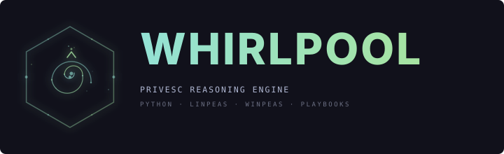

Privilege Escalation Reasoning Engine
Feed it raw LinPEAS or WinPEAS output, get back a prioritized attack plan with exact commands, confidence ratings, and multi-step attack chains. 329 GTFOBins, 86 LOLBAS, 42 kernel exploits, 9 potato attacks. Everything runs offline.
Parse, analyze, rank, and report -- a three-stage pipeline that turns raw enumeration output into actionable attack plans.
Feed Whirlpool any enumeration file and it figures out the format. LinPEAS .sh output, WinPEAS .exe/.bat output, manual commands -- all automatically detected.
329 GTFOBins entries, 86 LOLBAS binaries, 42 kernel exploits with version ranges, and 9 potato attacks with OS compatibility matrices. Zero network calls.
Every technique scored across reliability, safety, simplicity, and stealth. Five ranking profiles shift weights to match your scenario: default, OSCP, CTF, stealth, safe.
12 multi-step chain types: cron PATH hijack, Docker escape, NFS SUID planting, wildcard injection, LD_PRELOAD abuse, writable /etc/passwd, and more.
Purpose-built parsers with aggressive false-positive filtering. Real-world tested against 22 HTB/Vulnhub samples with zero crashes and zero blank results.
Rich terminal output with Catppuccin Mocha theming, Markdown reports, and structured JSON export. Quick-wins mode surfaces top 5 techniques.
Parse enumeration output, analyze against knowledge bases, rank with composite scoring.
LinPEAS, WinPEAS, and manual command parsers with 3 format variants and noise filtering
Core analyzer, composite ranker with 5 profiles, and 12-type attack chain detector
329 GTFOBins, 42 kernel exploits, 9 potato attacks, 86 LOLBAS -- all offline JSON
Rich terminal with Catppuccin Mocha, Markdown reports, and structured JSON export
pip install, feed it enumeration output, get back a prioritized attack plan.